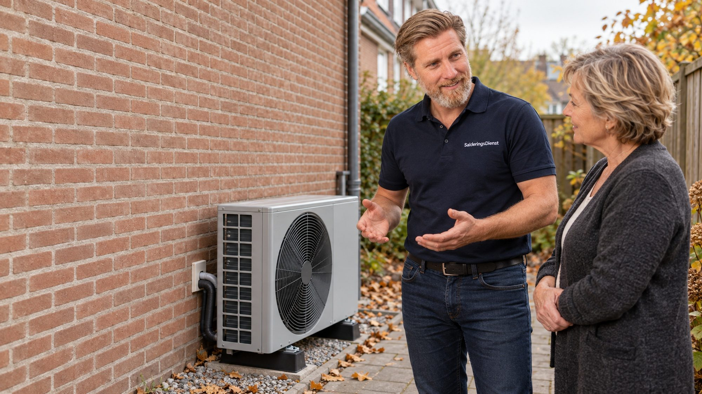
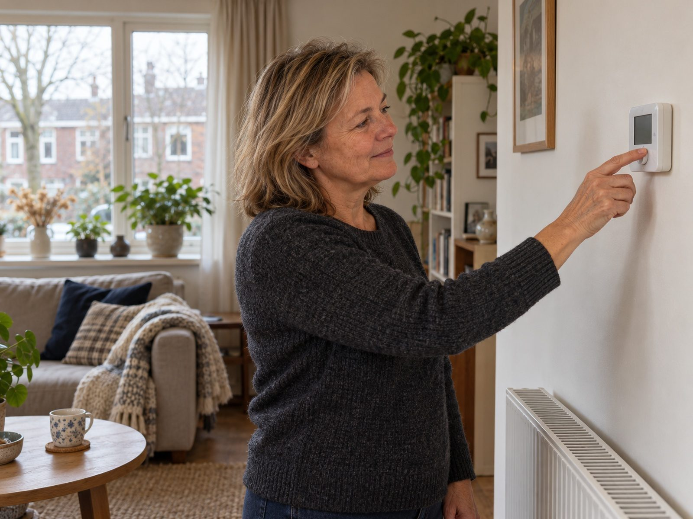

Een warmtepomp, eerst doorgerekend op úw woning.
Een warmtepomp verwarmt uw huis op stroom in plaats van gas. Of dat bij u goed werkt, hangt af van uw isolatie, uw radiatoren of vloerverwarming en uw stroomverbruik. Dat rekenen wij eerst door. Dan pas adviseren wij hybride, volledig elektrisch, of wachten.
- Advies kosteloos en vrijblijvend
- Hybride of volledig elektrisch, afhankelijk van uw woning
- Installatie en subsidieaanvraag via gecertificeerde partners

Wat wij doorrekenen voordat wij iets adviseren.
Een warmtepomp is geen cv-ketel met een ander etiket. Of hij uw huis warm krijgt en wat hij aan stroom vraagt, hangt af van vier dingen.
-
Uw isolatie
Hoeveel warmte uw huis verliest
Een warmtepomp werkt het best in een huis dat de warmte vasthoudt. Dak, muren, vloer en glas bepalen samen hoeveel vermogen er nodig is. Soms is isoleren de eerste stap, en de warmtepomp de tweede.
-
Uw afgifte
Radiatoren of vloerverwarming
Een warmtepomp verwarmt met water van lagere temperatuur dan een cv-ketel. Vloerverwarming en ruime radiatoren kunnen dat kwijt; kleine radiatoren niet altijd. Wij kijken per ruimte wat er nodig is.
-
Uw stroomverbruik
Wat de gasrekening wordt op de stroomrekening
Uw gasverbruik verdwijnt grotendeels, uw stroomverbruik stijgt, vooral in de winter. Wat dat per saldo doet, hangt af van uw contract en van de efficiëntie van de pomp bij uw woning. Dat rekenen wij door, niet schatten.
-
Uw zonnestroom
Wat de panelen en een batterij eraan bijdragen
In de zomer draait een warmtepomp voor warm water graag op uw eigen zonnestroom. In de winter, als hij het hardst werkt, is er weinig zon. Daarom rekenen wij eerlijk: wat uw dak en een batterij echt bijdragen, en wat van het net moet komen.
De uitkomst, in vermogen, verbruik en euro's, krijgt u in het adviesgesprek. Op de website tonen wij geen bedragen; die hangen te veel af van uw woning en uw contract.

Wat u krijgt.
Een advies dat begint bij uw huis, en de uitvoering als u dat wilt.
Wij berekenen hoeveel warmte uw huis nodig heeft en of uw radiatoren of vloerverwarming dat bij lagere temperatuur kunnen afgeven. Daaruit volgt het vermogen, en of er eerst iets aan de woning moet gebeuren.
Een hybride warmtepomp werkt naast uw cv-ketel en vangt het grootste deel van het stookseizoen op; een volledig elektrische vervangt de ketel helemaal. Welke bij uw woning past, staat in het advies, met de reden erbij.
Kiest u voor een warmtepomp, dan regelen wij levering en installatie door gecertificeerde partners en de aanvraag van de ISDE-subsidie. Uw adviseur blijft uw vaste aanspreekpunt tot en met de oplevering.
Een warmtepomp verandert uw stroomverbruik, en daarmee de som voor zonnepanelen en een thuisbatterij. Wij rekenen ze samen door, zodat de maten op elkaar passen.
Hybride of volledig elektrisch?
Het is geen kwestie van beter of slechter, maar van wat uw woning aankan. De doorrekening geeft het antwoord; dit is het verschil in het kort.
Soms is ons advies: eerst iets anders.
Een warmtepomp in een huis dat er niet klaar voor is, wordt een dure teleurstelling. Dit zijn situaties waarin wij regelmatig adviseren om te wachten of eerst iets anders te doen.
-
De isolatie is nog niet op orde
Verliest uw huis veel warmte, dan moet de warmtepomp hard werken en wordt de stroomrekening hoog. Dan is isoleren de betere eerste stap, en komt de pomp daarna.
-
De radiatoren zijn te klein
Kleine radiatoren die op hoge temperatuur moeten draaien, passen slecht bij een warmtepomp. Soms is dat op te lossen met grotere radiatoren of vloerverwarming; soms is hybride de verstandiger keuze.
-
Er is geen goede plek voor de buitenunit
De buitenunit maakt geluid en moet ruimte en lucht hebben. Er gelden regels voor het geluid bij de buren. Past dat niet, dan zeggen wij dat vooraf, niet achteraf.
Ook dan is het gesprek kosteloos, en de doorrekening krijgt u mee op papier.
Wat er in de offerte staat.
Toestel, installatie en inregeling staan gespecificeerd. Achteraf komt er niets bij.
-
Schouw van woning en installatie
Isolatie, radiatoren of vloerverwarming, de cv-ketel, de meterkast en de plek voor de buitenunit. Zo weet u vooraf waar u aan toe bent.
-
Warmtepomp en binnenunit
Merk, type en vermogen staan bij naam, met de garantievoorwaarden erbij. Het vermogen volgt uit de doorrekening, niet uit een standaardpakket.
-
Installatie en inregeling
Montage door een gecertificeerde installatiepartner, aansluiting op uw verwarming en warm water, en het inregelen van de temperaturen per ruimte.
-
Subsidieaanvraag
De ISDE-aanvraag met de documenten die daarvoor nodig zijn. Het subsidiebedrag staat apart in de offerte, zodat u ziet wat u netto betaalt.
Vragen over de warmtepomp.
Vaak wel, maar niet altijd volledig elektrisch. In een ouder huis met redelijke isolatie is een hybride warmtepomp meestal de passende stap; volledig elektrisch vraagt om goede isolatie en afgifte op lage temperatuur. De doorrekening laat zien wat bij uw woning kan.
Dat hangt af van hoeveel warmte uw huis verliest. Verliest het veel, dan is isoleren de goedkopere en betere eerste stap. Wij zeggen dat eerlijk, ook als dat betekent dat de warmtepomp nog even wacht.
Ja. Voor woningeigenaren is er de ISDE-subsidie op hybride en volledig elektrische warmtepompen, met voorwaarden voor het toestel en de installatie. Wij controleren vooraf of uw keuze eraan voldoet en verzorgen de aanvraag. Het bedrag staat apart in de offerte.
Ja, en uw gasrekening gaat omlaag of verdwijnt. Wat dat per saldo doet, hangt af van uw isolatie, uw contract en de efficiëntie van de pomp bij uw woning. Dat rekenen wij in het adviesgesprek door; op de website noemen wij bewust geen bedragen.
Moderne buitenunits zijn stil, maar niet geluidloos. Er gelden wettelijke regels voor het geluid op de erfgrens, vooral 's nachts. Bij de schouw kiezen wij een plek en zo nodig een geluidsmaatregel waarmee u en uw buren er geen last van hebben.
Deels. In de zomer kan de pomp voor warm water op uw eigen zonnestroom draaien, en met slimme sturing kunt u dat benutten. In de winter, als de pomp het hardst werkt, is er weinig zon en komt de stroom vooral van het net. Wij rekenen beide seizoenen eerlijk door.
Staat uw vraag er niet bij? Bel ons op 06 3936 9781.
Nog … dagen tot 1 januari 2027
Weet of uw woning klaar is voor een warmtepomp.
Kosteloos, zonder verplichtingen, en met de doorrekening op papier.